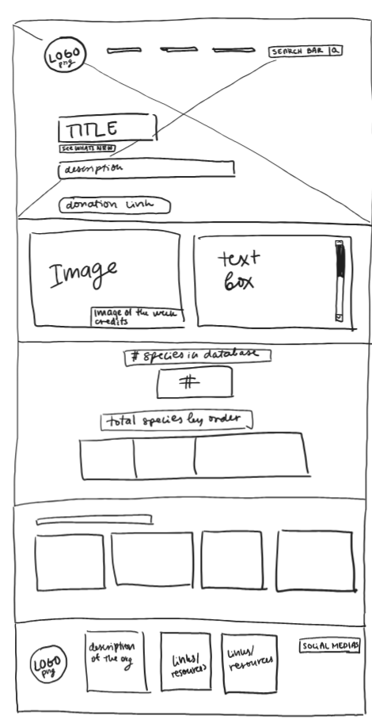
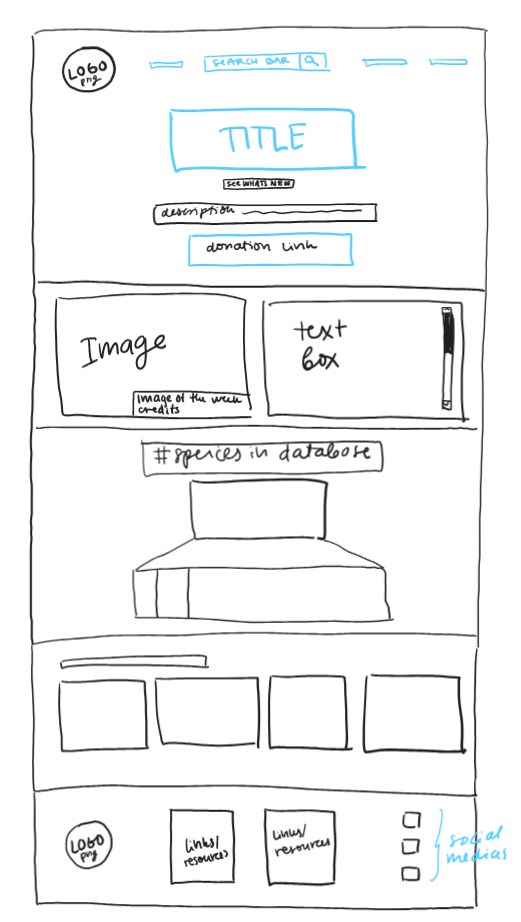

-
Using the favorite website you chose in homework 1, create a wireframe for one page of it using pen/paper, PowerPoint, or any your tool of choice. (use the 'img' tag!) Make sure to let us know what the name of your website is (Use the 'p' tag!)
https://amphibiaweb.org
-
Try to improve the website you've chosen, and create a redesigned wireframe of one page for the same website using the principles of visual hierarchy that you learned from the article.

-
What is the goal of the website? Who is it intended for? How does the design accomplish this? Write 2-3 sentences answering these questions. (Use the 'p' tag again!)
The website is intended for people interested in amphibians. It's a database designed to be easily searchable and explored. I think the design accomplishes this by having a convenient search bar, an image of the week with a text entry next to it, as well as links to explore the database.
-
Write 2-3 sentences about what problems your redesign addressed, and how it solved them.
I tried to make the statistic of the number of species described more readable and eyecatching, by making the total number of species and the species by order be part of the same graphic, which unites two separate but very closely related elements into one, which I think attracts more attention and it also makes the layout simpler. I also thought the bottom header was a little too full, so I broke it up by making hte social media links be in a column rather than a row, and removing hte text describing the organisation, since that is kind of repeatig information that should've been mentioned earlier in the page or somewhere else on the website.
NOTE: Make sure to include the wireframe images in the website and don't just put it in your assets folder!
Your wireframes should look something like this: